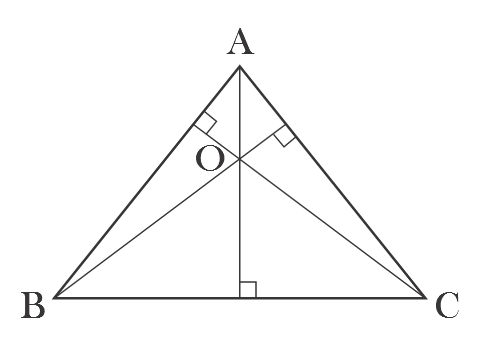

Actividad 7
Contenido
Averiguemos el significado y sus caracteristicas del ortocentro del triangulo.

- En un triángulo el punto de intersección de las tres alturas del triángulo (siendo una altura el segmento que parte de un vértice y es perpendicular al lado opuesto a dicho vértice). Se hace llamar
ortocentro .
Averiguemos el significado y sus caracteristicas del ortocentro del triangulo
- La posicion del ortocentro cambia segun el triangulo.
Triangulo agudo
Triangulo obtuso
Triangulo rectangulo